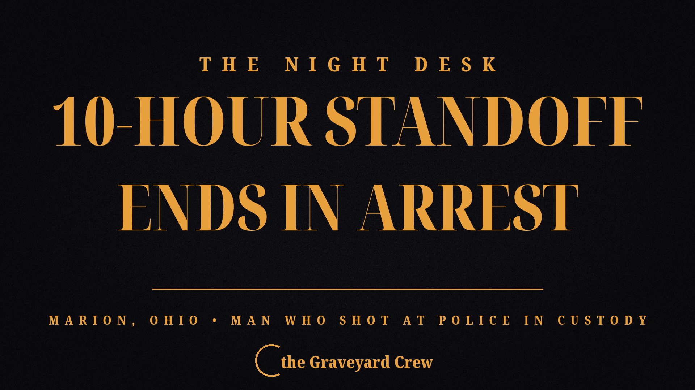

October 06, 2026
10-hour standoff in Marion, Ohio ends with man's arrest — he fired shots at police during the takedown

Headline card by The Night Desk
10-hour standoff in Marion, Ohio ends with man's arrest — he fired shots at police during the takedown
MARION, Ohio — A 10-hour armed standoff ended Tuesday morning, Oct. 6, with the arrest of 64-year-old Harold White, who fired multiple shots at law enforcement as officers moved in with less-lethal weapons.
According to a press release from the Marion Police Department, officers went to the 700 block of Silver Street on Oct. 5 to serve White on an active arrest warrant. When they entered the home, they found him sitting in a chair with a gun pointed at his head. Officers backed out immediately.
The department's special response team and hostage negotiation team took over. White made multiple threats to harm himself and kill law enforcement officers, and negotiators made repeated attempts to talk with him — but he eventually stopped responding and kept threatening.
As the hours dragged on, the special response team used chemical agents and broke windows and doors to open up the house and locate him.
Around 9:30 a.m. Tuesday, officers fired bean-bag rounds and pepper-ball projectiles. White answered by firing multiple shots at law enforcement. Officers did not return lethal fire — and after continuing the less-lethal tactics, they took White into custody without further incident.
"I want to thank all the assisting agencies for their help in bringing this 10-hour standoff to a peaceful conclusion," Marion Police Chief Jay McDonald said. "Our officers utilized every technique to help end this peacefully and we are grateful that no serious injuries were reported by any citizen, officer or suspect."
White was arrested and charged with two counts of attempted murder, failure to appear on the active warrant, resisting arrest, and additional firearm charges. The case will be reviewed by the Marion County Prosecutor's Office.
Assisting agencies included the Marion Combined Special Response Team, the Marion Hostage Negotiation Team, the Ohio State Highway Patrol Special Response Team, and the Crawford County Special Response Team.
Chief McDonald said police standoffs have increased over the past five years: "I just think that people have more access to weapons and they are less abiding of authority."
This is a developing story. The Night Desk will update as charges are formally filed and more details are released.
Source: Marion Star — read the original report
← Back to latest stories